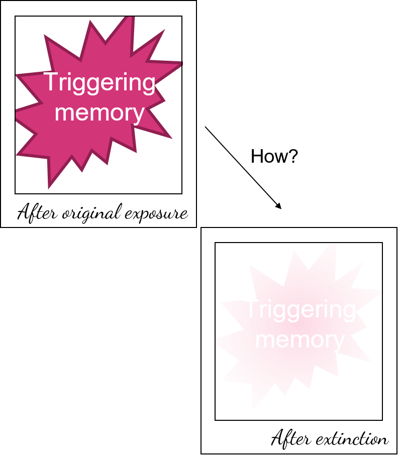

Role of the Basal Forebrain in mediating Infralimbic-Amygdala communication in fear extinction

How do we let go of an aversive memory?
In laboratory settings, we cannot interrogate our mice regarding their feelings. We can, however, have them associate two stimuli (e.g. sound and shock) and eventually they’ll freeze to the sound alone. If, afterwards, we present them with just the sound multiple times, then they’ll start breaking away from the sound-shock association and their fear response will decrease as the trials go by – they’re extinguishing their fear memory. I’m investigating how three brain regions – infralimbic portion of the medial prefrontal cortex, basal forebrain, and basolateral amygdala – work together in order to orchestrate proper fear extinction via simultaneous recordings from and manipulation of these three regions. I hope my work can eventually contribute for more efficacious PTSD treatments and provide relief to these patients.
I’m looking into getting started with small data analysis/visualization projects, as well as learning new languages such as HTML, CSS and JS.
This website is my first project and I’m building it from scratch. I’m teaching myself HTML, CSS, and design with Figma - it's still a work in progress but feel free to give me some feedback :)